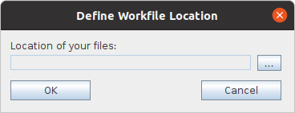
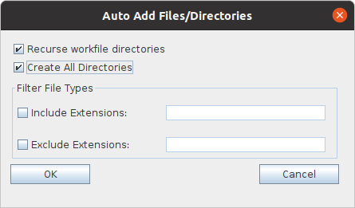

|
QVCSOS Enterprise -- Installation and Getting Started...Step 12: Define the workfile location for the project:If you expand the server node, you will see the project that you defined in Step 8. Select that project node. The branches defined for that project will appear. At this point, only the 'Trunk' branch is defined. Click on the 'Trunk' branch. The Define Workfile Location dialog will pop up.  Click on the [...] button to use this dialog to define the location that the QVCSOS-Enterprise client uses for your work files associated with the selected project. Typically, this is the root directory of a directory tree where the files that you work with for the selected project reside. Step 13: Add files to version control:When you successfully define the workfile location for a project, the gui client will display the workfile location in the header control above the file list pane on the right side of the screen. If there are any files in the directory that you selected, they will appear in the file list pane, and the "File status" column will show them with a status of "Not controlled," meaning that they are not currently under version control. To add the files of your project to version control, select the project node in the tree control on the left side of the screen. Right click, and select the Auto-add Files/Directories... menu option. On the resulting Auto Add Files/Directories dialog, you can decide whether to add all files in any subdirectories in addition to those in the immediate workfile directory. You can also filter which files are added based on their extension. Fill in the fields as seems appropriate, and click OK.  The client and server will rattle around adding the files to version control. If there are enough files, a progress bar will appear. You should also see the status of the files change from "Not Controlled" to "Current." |
| For the source code, see https://github.com/jimv39/qvcsos |